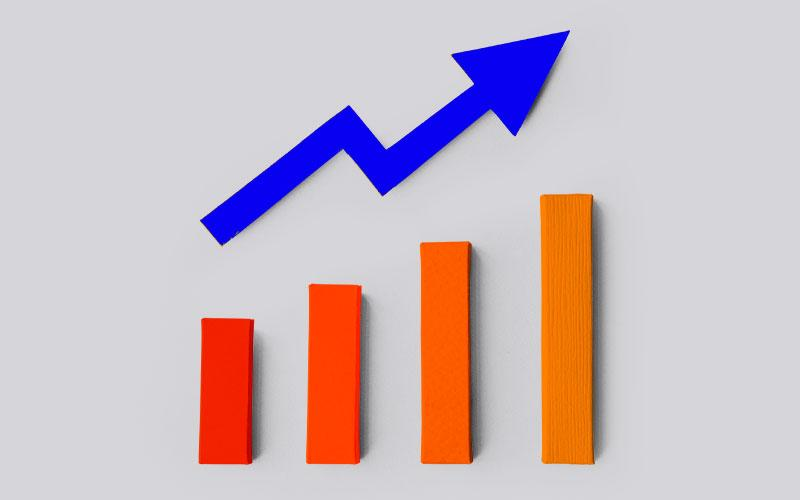

O aumento contínuo das tarifas de energia elétrica nas regiões urbanas e a dificuldade de acesso à eletricidade nas regiões rurais geram desafios significativos tanto para os consumidores quanto para o próprio desenvolvimento local. As famílias sofrem com custos elevados e, em muitas áreas rurais, o acesso à energia elétrica ainda é escasso ou inexistente, prejudicando a qualidade de vida e as oportunidades de crescimento.
Nosso sistema é composto por painéis solares de última geração equipados com seguidores solares, que permitem otimizar a captação de energia ao posicionar os painéis automaticamente na melhor orientação em relação ao sol. Além disso, o sistema conta com um carregador automático inteligente, que gerencia de forma eficiente a distribuição da energia gerada, maximizando o uso da energia solar de forma autônoma e sem necessidade de intervenção constante.
Os objetivos que pretendemos alcançar com nosso sistema são:
-Facilitar o acesso à energia limpa e renovável em áreas urbanas e rurais.
-Reduzir os custos com eletricidade, oferecendo uma alternativa sustentável e econômica para consumidores urbanos.
-Estimular o uso de soluções off grid como modelo de energia autossustentável, beneficiando tanto áreas com infraestrutura limitada quanto usuários em contextos urbanos.
-Contribuir para a redução da dependência de fontes de energia poluentes, promovendo a transição para um futuro mais verde e acessível para todos nós.
Os públicos-alvo que pretendemos impactar são:
-Residentes urbanos que enfrentam altas tarifas de energia elétrica e desejam reduzir seus custos com eletricidade.
-Famílias e pequenas propriedades rurais em regiões afastadas da rede elétrica, que buscam uma solução sustentável para suprir suas necessidades energéticas.
-Pequenos negócios em áreas isoladas que necessitam de uma fonte de energia estável e econômica.
-Organizações e comunidades com interesse em adotar práticas mais sustentáveis, diminuindo sua pegada de carbono e promovendo a energia renovável.
Estes são os benefícios oferecidos pela nossa solução:
-Redução de custos com eletricidade, permitindo aos usuários economizar significativamente ao longo do tempo, especialmente em regiões com tarifas de energia elevadas.
-Acesso a energia em locais remotos, facilitando a vida de quem não possui infraestrutura de rede elétrica.
-Sustentabilidade ambiental, ao promover o uso de energia solar, uma fonte renovável e de baixo impacto ambiental.
-Autonomia e confiabilidade, com o sistema off grid garantindo fornecimento de energia constante sem depender de fontes externas ou da rede elétrica convencional.
Para os residentes urbanos, o sistema oferece uma alternativa prática e eficiente para reduzir a conta de luz, promovendo uma economia considerável, especialmente em tempos de altas tarifas. Já para os usuários rurais, a solução representa uma forma de acesso confiável à eletricidade para realizar tarefas cotidianas como iluminação, funcionamento de aparelhos eletrônicos e até mesmo o desenvolvimento de pequenas atividades econômicas. Além disso, o sistema off grid traz tranquilidade e autonomia, permitindo que as famílias vivam de forma mais independente, sem as limitações impostas pelas redes de energia tradicionais.